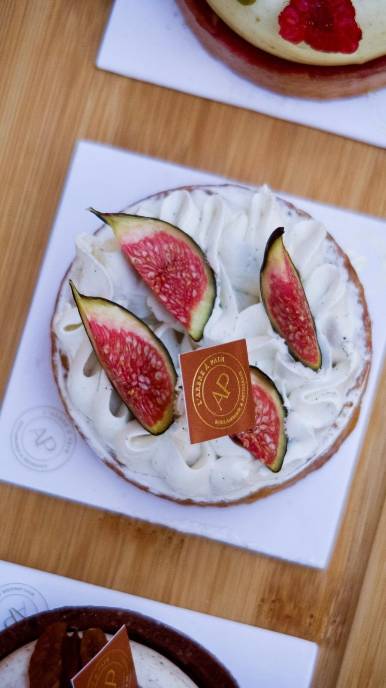

Quand les figues arrivent sur les étals, cette tarte revient en vitrine. Elle se prépare sans cuisson des fruits, pour garder tout leur parfum. Pour 6 à 8 personnes.
Ingrédients
Pâte sablée : 200 g de farine, 100 g de beurre froid, 70 g de sucre glace, 25 g de poudre d'amande, 1 œuf, 1 pincée de sel.
Crème légère : 250 g de mascarpone, 200 g de crème liquide entière bien froide, 40 g de sucre glace, 1 gousse de vanille.
Garniture : 6 à 8 figues fraîches, 1 cuillère à soupe de miel.
Préparation
- Sablez du bout des doigts la farine, le beurre en dés, le sucre glace, la poudre d'amande et le sel. Ajoutez l'œuf et formez une boule sans trop travailler. Filmez et laissez reposer 1 heure au frais.
- Étalez la pâte, foncez un cercle de 22 cm et piquez le fond. Faites cuire à blanc 20 minutes à 170 °C, jusqu'à une belle couleur dorée. Laissez refroidir.
- Fouettez le mascarpone, la crème, le sucre glace et les grains de vanille jusqu'à obtenir une crème ferme.
- Garnissez le fond de tarte de crème, à la spatule ou à la poche.
- Coupez les figues en quartiers et disposez-les sur la crème. Nappez d'un filet de miel tiédi.
- Réservez 1 heure au réfrigérateur avant de servir.
Les conseils du chef
Choisissez des figues souples sous le doigt, c'est le signe qu'elles sont mûres. Et montez la tarte le jour même : la pâte reste croustillante et la crème bien aérienne.